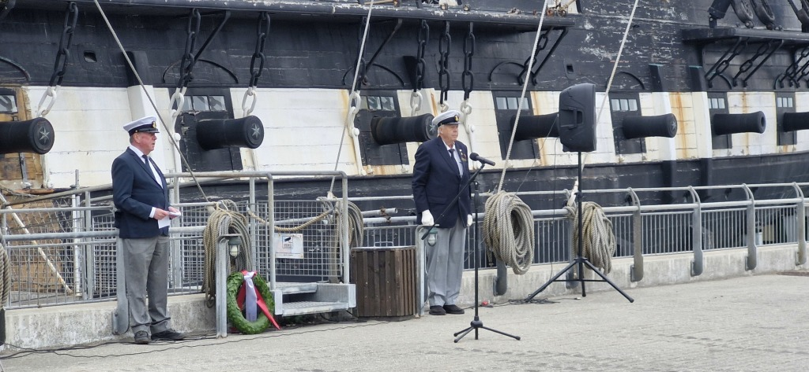
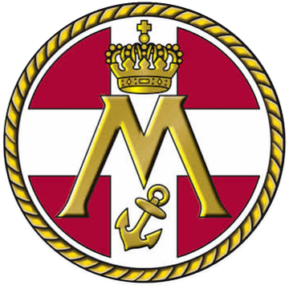
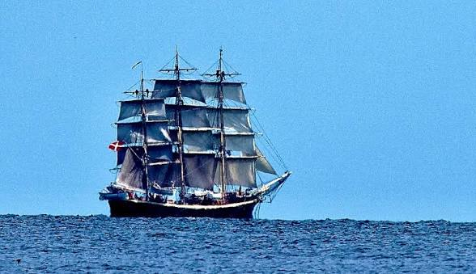
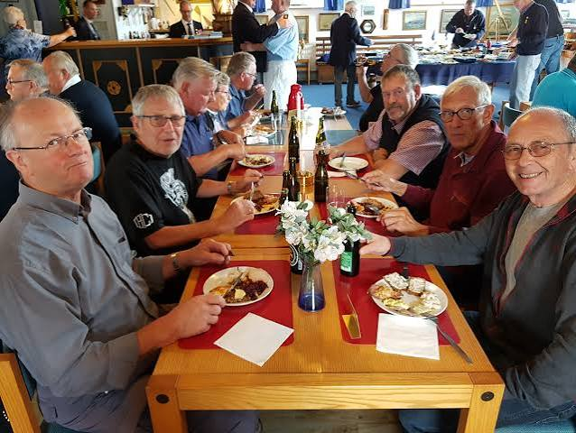
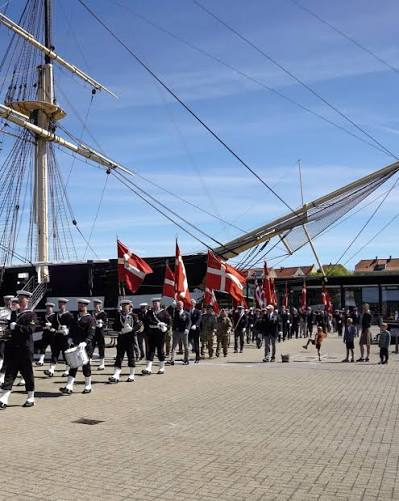
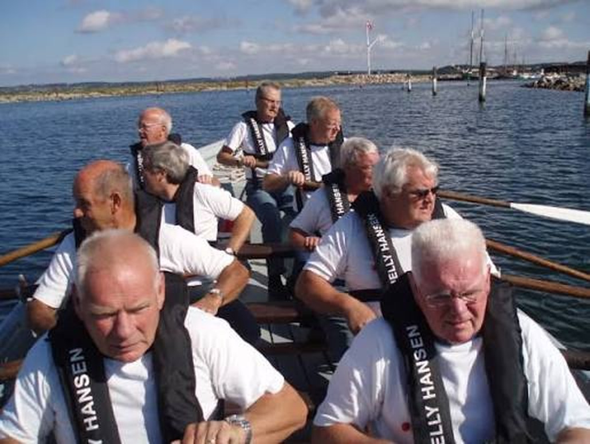

01 / VELKOMMEN OMBORD
Bliv medlem
Et maritimt fællesskab med traditioner, kammeratskab og aktiviteter året rundt.

Søfart · Traditioner · Fællesskab

Et maritimt fællesskab siden 1917
Velkommen ombord i Ebeltoft Marineforening. Kig forbi Marinestuen og oplev fællesskabet – også hvis du endnu ikke er medlem.
Nyheder og meddelelser fra Ebeltoft Marineforening.
Uanset om du vil være medlem, hjælpe til eller deltage i vores arrangementer, er der en vej ombord.

Et maritimt fællesskab med traditioner, kammeratskab og aktiviteter året rundt.

Vær med til at skabe gode oplevelser og hjælpe ved foreningens aktiviteter.

Oplev traditionerne, sammenholdet og de kommende arrangementer.
Her er plads til både nye gæster, medlemmer og veteraner. Kom forbi, mød menneskerne og oplev traditionerne.
Du behøver ikke være medlem for at kigge indenfor og høre om fællesskabet. Vi mødes i Marinestuen på Stockflethsvej 7 i Ebeltoft.
Tirsdagstræf kl. 10–12 med morgenmad og kaffe til 30 kr. Lørdagsfrokost kl. 11.30 med tilmelding senest torsdag.
Veterancafé den første mandag i måneden fra kl. 09.30 med gratis morgenmad og kaffe. Her er plads til samtaler, samvær og soldaterhistorier.

Vi samler mennesker med interesse for Søværnet, søfarten og det maritime liv. Her mødes vi om sejlads, Slupkoret, aktiviteter og gode oplevelser i Marinestuen.